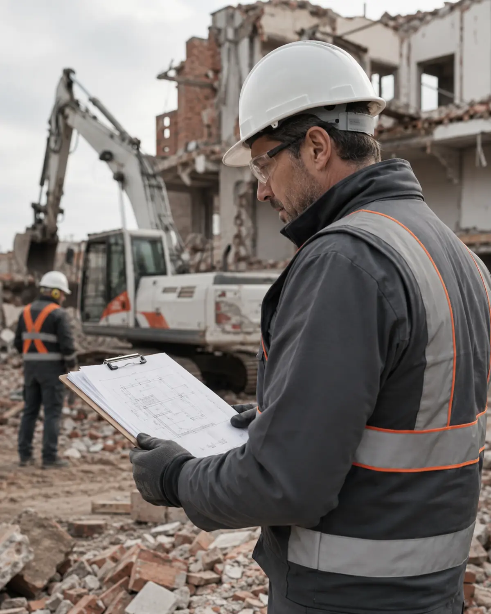
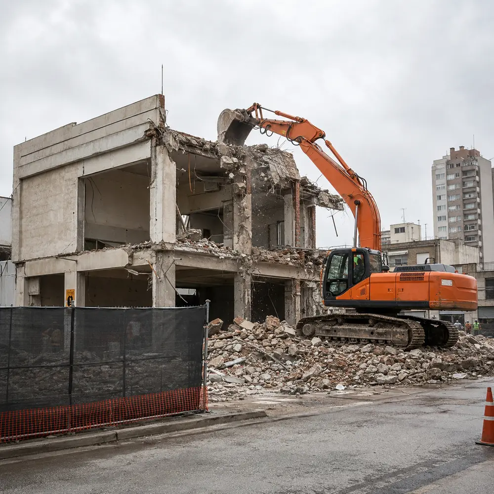
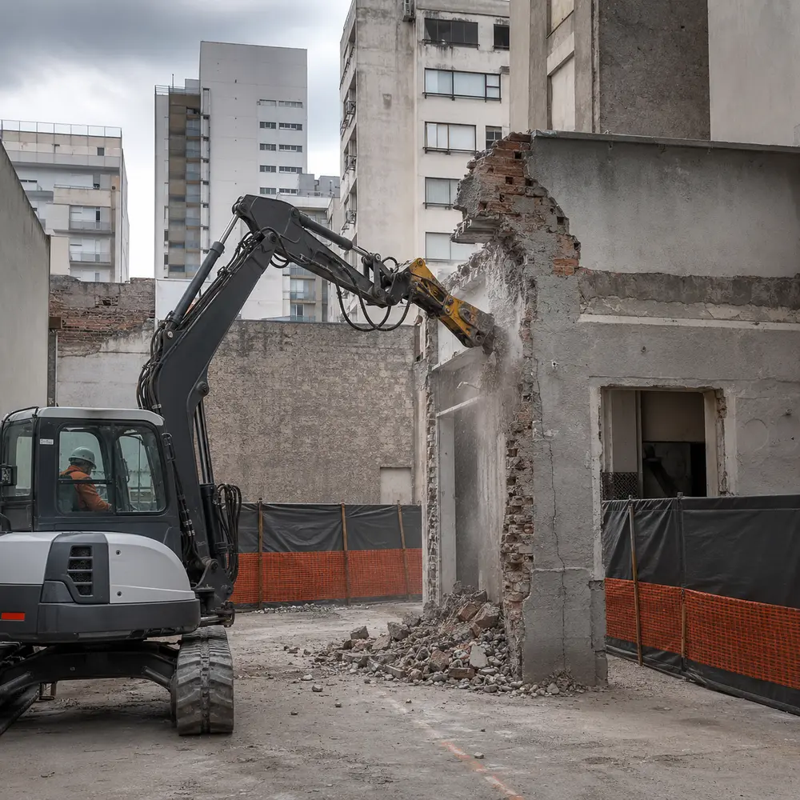
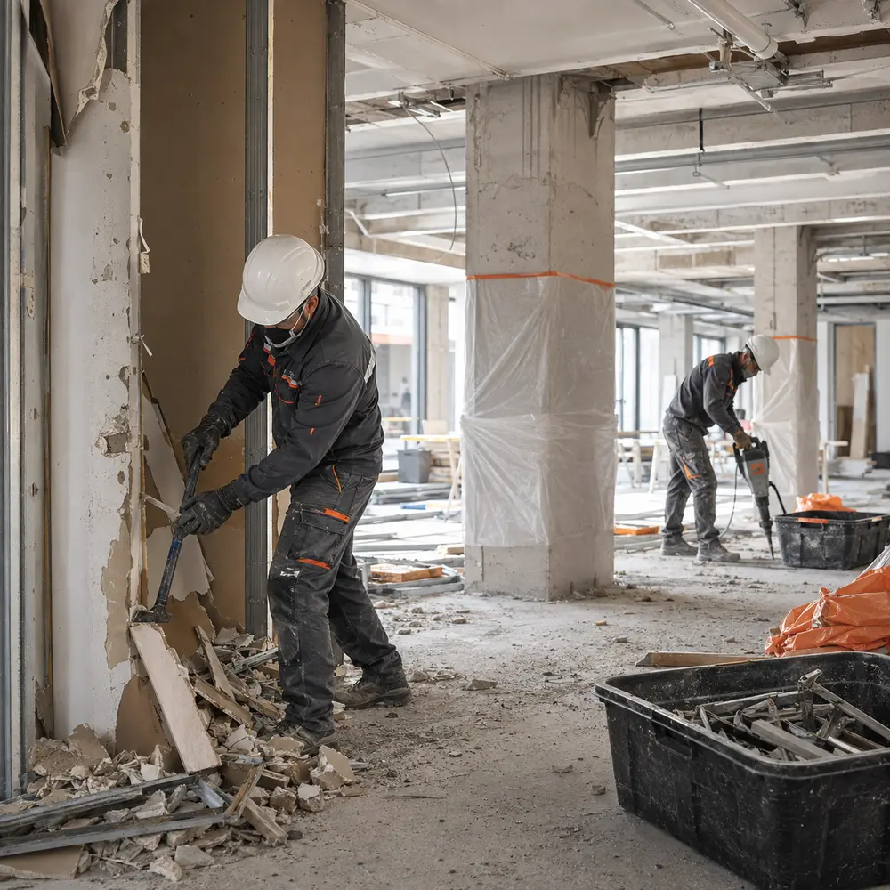

Demolición total, parcial y controlada para obra civil e industrial. Planificamos cada derribo como una obra de ingeniería: con permisos en regla, personal certificado y cero improvisación.
Cada demolición se planifica según el edificio, su entorno y lo que hay alrededor. Elegimos el método, no al revés.
Derribo completo de estructuras con maquinaria pesada, para liberar el terreno de punta a punta.
Intervenciones acotadas que preservan la estructura circundante: ampliaciones, refacciones y aperturas.
Secuencias calculadas para entornos urbanos densos, con monitoreo de vibración y resguardo perimetral.
Retiro de instalaciones, revestimientos y estructuras internas sin tocar la envolvente del edificio.
Clasificación, carga y disposición final de residuos de obra según normativa vigente.
Inspección previa, informe técnico y gestión de permisos antes de mover una sola máquina.
Un mismo procedimiento, sin importar la escala del proyecto.
Visita técnica, estudio estructural y del entorno inmediato.
Gestión de la documentación y habilitaciones municipales necesarias.
Ejecución con el método definido, bajo supervisión permanente en obra.
Retiro de escombros, limpieza del terreno y entrega del predio.
Protocolos de resguardo, señalización y monitoreo en cada etapa del derribo.
Equipos de demolición mantenidos y operados por personal certificado.
Permisos, seguros y disposición de residuos, todo bajo normativa vigente.
Seguimiento directo del proyecto de principio a fin, sin intermediarios.

Tres tipos de intervención realizados con planificación, seguridad y control de obra.


